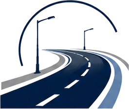
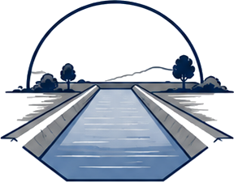
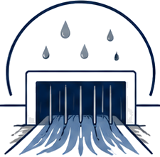
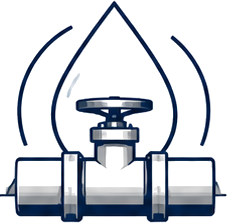
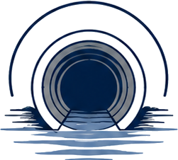
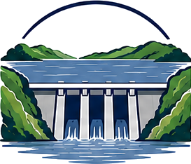
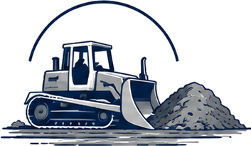
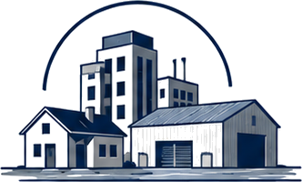
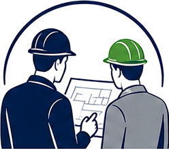
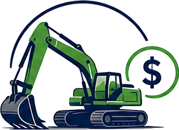

A full spectrum of civil engineering disciplines, delivered to national standards by a single accountable contractor — plus affordable plant hire from our owned fleet.

New road construction, rehabilitation, resurfacing and associated structures — from access roads to arterial routes. We deliver gravel and surfaced roads engineered for Zimbabwe's traffic loads and climate, including kerbing, signage and road marking.

Lined and unlined irrigation and conveyance canals for agriculture, mining and municipal water transfer. Hydraulic design, earthworks, concrete lining and control structures delivered end to end.

Piped and open-channel drainage that protects roads, developments and communities from flood damage. Catchment analysis, culverts, headwalls, channels and attenuation infrastructure.

Bulk water supply and distribution — reservoirs, pump stations, treatment-adjacent works and full reticulation networks. Engineered for reliable supply and minimal losses.

Gravity and pumped foul-water systems for residential, commercial and industrial developments. Pipelines, manholes, pump stations and connections built for capacity and longevity.

Earth-fill and concrete dams for water storage, irrigation and supply schemes. Embankment construction, spillways, outlet works and instrumentation to recognised dam-safety standards.

Mass excavation, cut-and-fill, site clearance, terracing and platform formation at scale. Supported by an owned plant fleet for cost control and programme certainty.

Complete site infrastructure for serviced stands and developments — roads, water, sewer, stormwater and earthworks coordinated under one contractor from groundbreaking to handover.

Civil engineering consultancy spanning feasibility studies, design, costing and contract administration. We advise clients from concept through delivery — bringing the same site-tested experience that backs our construction work to the planning table.

Rodcroft owns an extensive fleet of specialised construction equipment — graders, excavators, dozers, rollers, tipper trucks, water bowsers and backhoe loaders. This lets us take on contracts of any size with minimal hired equipment, and we make that same plant available to clients on competitive hire terms.